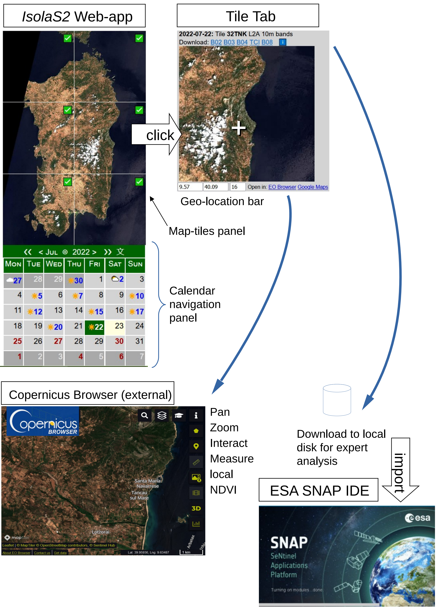

IsolaS2 - Mini User Guide
Select an island or region on the
home page
to open the IsolaS2 Web-app
- which
will look something like that shown below on the left.

The calendar navigating panel allows you to navigate to other dates:
- The current date is high-lit in yellow.
- The green highlight indicates the date of the acquisition being shown in the upper panel.
- Red numerals indicate future scheduled acquisition dates.
- Blue numerals indicate dates of existing acquisitions – each bearing a symbol.
- Each symbol (☁⛅☀️) indicates the likelihood of obscuring cloud cover on that date.
- Clicking on a day marked by a symbol updates the upper panel to display its images.
- The top two rows of the calendar panel indicate the month, year, and the days of the week.
- Clicking on the 文 toggles the language of the month and day names – e.g. to Italian.
- Clicking on the < or > moves back or forward by a month.
- Clicking on the << or >> moves back or forward by a year.
- Clicking on the circle symbol returns to today’s month.
The map tile panel is a grid showing contiguous UTC tiles where each tile is initially filled in with it
geographically mapped image from the latest Sentinel-2 acquisition. Tiles are marked as follows:
-
üü° a yellow circle (not shown) indicates a tile for which the ‚Äúraw‚Äù level 1C product has
been successfully acquired by ESA.
-
✅ A green tick box replaces the yellow circle – typically after six hours – once ESA has
processed the acquisition and published it as level 2A product suitable for land-use analysis.
Clicking on a green-tick tile opens a new browser-tab labelled the Tile Tab in the Figure above.
-
üìâ A ‚Äòbreak‚Äô symbol replaces those above in the rare case of a split tile ‚Äì explained later.
Its tile also becomes clickable when the level 2A product is available.
-
⚪ A grey circle indicates a tile left blank. This occurs when the tile either lies outside of
the satellites swath, or outside of our specified region of interest and has not been requested,
or when the data is not yet published.
The Tile Tab lets you effectively zoom-in further or download MSI data to disk.
- A click on the tile-image established a point of interest (white cross) and fills the geo-location bar with the corresponding longitude and latitude coordinates.
- A click on the link marked
Copernicus Browser
opens another tab containing that external service centred on the selected longitude latitude coordinate – with an adjustable zoom-factor: default 16.
- The links marked B02, B03, B04, TCI or B08 when clicked initiate the download of the named 10m MSI band images for the given tile.
- Downloads are from Google Storage's
Sentinel-2 repository
and are typically rapid once they become available about a day following acquisition.
- You may then visualize and or analyse the downloaded MSI data locally – e.g. on a workstation using ESA's
SNAP
software, a GIS or by using
Gdal
based scripts or even on a PC using
IrfanView using its JPEG2000 plugin.